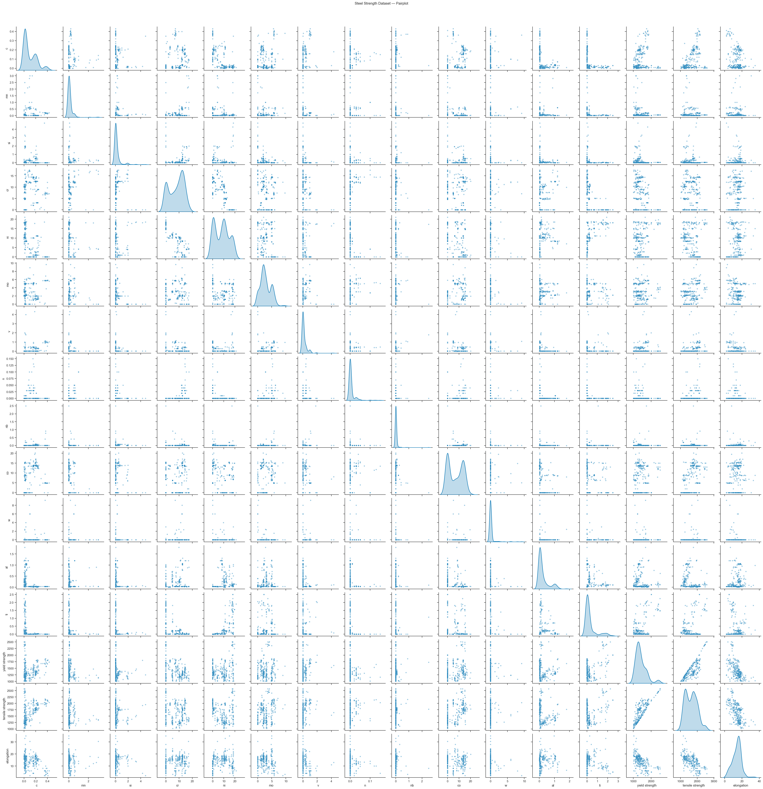
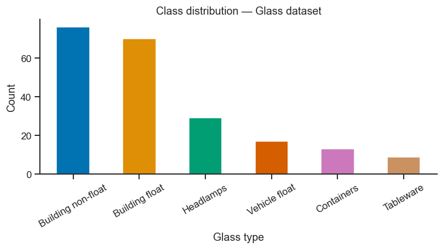

Data Access Guide#
This notebook shows you how to programmatically download several of the materials science datasets recommended for the course project, and how to inspect and prepare them for analysis.
import numpy as np
import pandas as pd
import matplotlib.pyplot as plt
import seaborn as sns
sns.set_theme(style='ticks', palette='colorblind')
plt.rcParams.update({'figure.dpi': 110, 'font.size': 11})
A. MatBench / matminer datasets (recommended for most projects)#
# pip install matminer (already installed on the course server)
from matminer.datasets import load_dataset, get_available_datasets
# List all available datasets
available = sorted(get_available_datasets())
print(f"{len(available)} datasets available in matminer. First 20:")
for name in available[:20]:
print(f" {name}")
print(" ...")
boltztrap_mp: Effective mass and thermoelectric properties of 8924 compounds in The Materials Project database that are calculated by the BoltzTraP software package run on the GGA-PBE or GGA+U density functional theory calculation results. The properties are reported at the temperature of 300 Kelvin and the carrier concentration of 1e18 1/cm3.
brgoch_superhard_training: 2574 materials used for training regressors that predict shear and bulk modulus.
castelli_perovskites: 18,928 perovskites generated with ABX combinatorics, calculating gllbsc band gap and pbe structure, and also reporting absolute band edge positions and heat of formation.
citrine_thermal_conductivity: Thermal conductivity of 872 compounds measured experimentally and retrieved from Citrine database from various references. The reported values are measured at various temperatures of which 295 are at room temperature.
dielectric_constant: 1,056 structures with dielectric properties, calculated with DFPT-PBE.
double_perovskites_gap: Band gap of 1306 double perovskites (a_1-b_1-a_2-b_2-O6) calculated using Gritsenko, van Leeuwen, van Lenthe and Baerends potential (gllbsc) in GPAW.
double_perovskites_gap_lumo: Supplementary lumo data of 55 atoms for the double_perovskites_gap dataset.
elastic_tensor_2015: 1,181 structures with elastic properties calculated with DFT-PBE.
expt_formation_enthalpy: Experimental formation enthalpies for inorganic compounds, collected from years of calorimetric experiments. There are 1,276 entries in this dataset, mostly binary compounds. Matching mpids or oqmdids as well as the DFT-computed formation energies are also added (if any).
expt_formation_enthalpy_kingsbury: Dataset containing experimental standard formation enthalpies for solids. Formation enthalpies were compiled primarily from Kim et al., Kubaschewski, and the NIST JANAF tables (see references). Elements, liquids, and gases were excluded. Data were deduplicated such that each material is associated with a single formation enthalpy value. Refer to Wang et al. (see references) for a complete desciption of the methods used. Materials Project database IDs (mp-ids) were assigned to materials from among computed materials in the Materials Project database (version 2021.03.22) that were 1) not marked 'theoretical', 2) had structures matching at least one ICSD material, and 3) were within 200 meV of the DFT-computed stable energy hull (e_above_hull < 0.2 eV). Among these candidates, we chose the mp-id with the lowest e_above_hull that matched the reported spacegroup (where available).
expt_gap: Experimental band gap of 6354 inorganic semiconductors.
expt_gap_kingsbury: Identical to the matbench_expt_gap dataset, except that Materials Project database IDs (mp-ids) have been associated with each material using the same method as described for the expt_formation_enthalpy_kingsbury dataset. Columns have also been renamed for consistency with the formation enthalpy data.
flla: 3938 structures and computed formation energies from "Crystal Structure Representations for Machine Learning Models of Formation Energies."
glass_binary: Metallic glass formation data for binary alloys, collected from various experimental techniques such as melt-spinning or mechanical alloying. This dataset covers all compositions with an interval of 5 at. % in 59 binary systems, containing a total of 5959 alloys in the dataset. The target property of this dataset is the glass forming ability (GFA), i.e. whether the composition can form monolithic glass or not, which is either 1 for glass forming or 0 for non-full glass forming.
glass_binary_v2: Identical to glass_binary dataset, but with duplicate entries merged. If there was a disagreement in gfa when merging the class was defaulted to 1.
glass_ternary_hipt: Metallic glass formation dataset for ternary alloys, collected from the high-throughput sputtering experiments measuring whether it is possible to form a glass using sputtering. The hipt experimental data are of the Co-Fe-Zr, Co-Ti-Zr, Co-V-Zr and Fe-Ti-Nb ternary systems.
glass_ternary_landolt: Metallic glass formation dataset for ternary alloys, collected from the "Nonequilibrium Phase Diagrams of Ternary Amorphous Alloys,’ a volume of the Landolt– Börnstein collection. This dataset contains experimental measurements of whether it is possible to form a glass using a variety of processing techniques at thousands of compositions from hundreds of ternary systems. The processing techniques are designated in the "processing" column. There are originally 7191 experiments in this dataset, will be reduced to 6203 after deduplicated, and will be further reduced to 6118 if combining multiple data for one composition. There are originally 6780 melt-spinning experiments in this dataset, will be reduced to 5800 if deduplicated, and will be further reduced to 5736 if combining multiple experimental data for one composition.
heusler_magnetic: 1153 Heusler alloys with DFT-calculated magnetic and electronic properties. The 1153 alloys include 576 full, 449 half and 128 inverse Heusler alloys. The data are extracted and cleaned (including de-duplicating) from Citrine.
jarvis_dft_2d: Various properties of 636 2D materials computed with the OptB88vdW and TBmBJ functionals taken from the JARVIS DFT database.
jarvis_dft_3d: Various properties of 25,923 bulk materials computed with the OptB88vdW and TBmBJ functionals taken from the JARVIS DFT database.
jarvis_ml_dft_training: Various properties of 24,759 bulk and 2D materials computed with the OptB88vdW and TBmBJ functionals taken from the JARVIS DFT database.
m2ax: Elastic properties of 223 stable M2AX compounds from "A comprehensive survey of M2AX phase elastic properties" by Cover et al. Calculations are PAW PW91.
matbench_dielectric: Matbench v0.1 test dataset for predicting refractive index from structure. Adapted from Materials Project database. Removed entries having a formation energy (or energy above the convex hull) more than 150meV and those having refractive indices less than 1 and those containing noble gases. Retrieved April 2, 2019. For benchmarking w/ nested cross validation, the order of the dataset must be identical to the retrieved data; refer to the Automatminer/Matbench publication for more details.
matbench_expt_gap: Matbench v0.1 test dataset for predicting experimental band gap from composition alone. Retrieved from Zhuo et al. supplementary information. Deduplicated according to composition, removing compositions with reported band gaps spanning more than a 0.1eV range; remaining compositions were assigned values based on the closest experimental value to the mean experimental value for that composition among all reports. For benchmarking w/ nested cross validation, the order of the dataset must be identical to the retrieved data; refer to the Automatminer/Matbench publication for more details.
matbench_expt_is_metal: Matbench v0.1 test dataset for classifying metallicity from composition alone. Retrieved from Zhuo et al. supplementary information. Deduplicated according to composition, ensuring no conflicting reports were entered for any compositions (i.e., no reported compositions were both metal and nonmetal). For benchmarking w/ nested cross validation, the order of the dataset must be identical to the retrieved data; refer to the Automatminer/Matbench publication for more details.
matbench_glass: Matbench v0.1 test dataset for predicting full bulk metallic glass formation ability from chemical formula. Retrieved from "Nonequilibrium Phase Diagrams of Ternary Amorphous Alloys,’ a volume of the Landolt– Börnstein collection. Deduplicated according to composition, ensuring no compositions were reported as both GFA and not GFA (i.e., all reports agreed on the classification designation). For benchmarking w/ nested cross validation, the order of the dataset must be identical to the retrieved data; refer to the Automatminer/Matbench publication for more details.
matbench_jdft2d: Matbench v0.1 test dataset for predicting exfoliation energies from crystal structure (computed with the OptB88vdW and TBmBJ functionals). Adapted from the JARVIS DFT database. For benchmarking w/ nested cross validation, the order of the dataset must be identical to the retrieved data; refer to the Automatminer/Matbench publication for more details.
matbench_log_gvrh: Matbench v0.1 test dataset for predicting DFT log10 VRH-average shear modulus from structure. Adapted from Materials Project database. Removed entries having a formation energy (or energy above the convex hull) more than 150meV and those having negative G_Voigt, G_Reuss, G_VRH, K_Voigt, K_Reuss, or K_VRH and those failing G_Reuss <= G_VRH <= G_Voigt or K_Reuss <= K_VRH <= K_Voigt and those containing noble gases. Retrieved April 2, 2019. For benchmarking w/ nested cross validation, the order of the dataset must be identical to the retrieved data; refer to the Automatminer/Matbench publication for more details.
matbench_log_kvrh: Matbench v0.1 test dataset for predicting DFT log10 VRH-average bulk modulus from structure. Adapted from Materials Project database. Removed entries having a formation energy (or energy above the convex hull) more than 150meV and those having negative G_Voigt, G_Reuss, G_VRH, K_Voigt, K_Reuss, or K_VRH and those failing G_Reuss <= G_VRH <= G_Voigt or K_Reuss <= K_VRH <= K_Voigt and those containing noble gases. Retrieved April 2, 2019. For benchmarking w/ nested cross validation, the order of the dataset must be identical to the retrieved data; refer to the Automatminer/Matbench publication for more details.
matbench_mp_e_form: Matbench v0.1 test dataset for predicting DFT formation energy from structure. Adapted from Materials Project database. Removed entries having formation energy more than 2.5eV and those containing noble gases. Retrieved April 2, 2019. For benchmarking w/ nested cross validation, the order of the dataset must be identical to the retrieved data; refer to the Automatminer/Matbench publication for more details.
matbench_mp_gap: Matbench v0.1 test dataset for predicting DFT PBE band gap from structure. Adapted from Materials Project database. Removed entries having a formation energy (or energy above the convex hull) more than 150meV and those containing noble gases. Retrieved April 2, 2019. For benchmarking w/ nested cross validation, the order of the dataset must be identical to the retrieved data; refer to the Automatminer/Matbench publication for more details.
matbench_mp_is_metal: Matbench v0.1 test dataset for predicting DFT metallicity from structure. Adapted from Materials Project database. Removed entries having a formation energy (or energy above the convex hull) more than 150meV and those containing noble gases. Retrieved April 2, 2019. For benchmarking w/ nested cross validation, the order of the dataset must be identical to the retrieved data; refer to the Automatminer/Matbench publication for more details.
matbench_perovskites: Matbench v0.1 test dataset for predicting formation energy from crystal structure. Adapted from an original dataset generated by Castelli et al. For benchmarking w/ nested cross validation, the order of the dataset must be identical to the retrieved data; refer to the Automatminer/Matbench publication for more details.
matbench_phonons: Matbench v0.1 test dataset for predicting vibration properties from crystal structure. Original data retrieved from Petretto et al. Original calculations done via ABINIT in the harmonic approximation based on density functional perturbation theory. Removed entries having a formation energy (or energy above the convex hull) more than 150meV. For benchmarking w/ nested cross validation, the order of the dataset must be identical to the retrieved data; refer to the Automatminer/Matbench publication for more details.
matbench_steels: Matbench v0.1 test dataset for predicting steel yield strengths from chemical composition alone. Retrieved from Citrine informatics. Deduplicated. For benchmarking w/ nested cross validation, the order of the dataset must be identical to the retrieved data; refer to the Automatminer/Matbench publication for more details.
mp_all_20181018: A complete copy of the Materials Project database as of 10/18/2018. mp_all files contain structure data for each material while mp_nostruct does not.
mp_nostruct_20181018: A complete copy of the Materials Project database as of 10/18/2018. mp_all files contain structure data for each material while mp_nostruct does not.
phonon_dielectric_mp: Phonon (lattice/atoms vibrations) and dielectric properties of 1296 compounds computed via ABINIT software package in the harmonic approximation based on density functional perturbation theory.
piezoelectric_tensor: 941 structures with piezoelectric properties, calculated with DFT-PBE.
ricci_boltztrap_mp_tabular: Ab-initio electronic transport database for inorganic materials. Complex multivariable BoltzTraP simulation data is condensed down into tabular form of two main motifs: average eigenvalues at set moderate carrier concentrations and temperatures, and optimal values among all carrier concentrations and temperatures within certain ranges. Here are reported the average of the eigenvalues of conductivity effective mass (mₑᶜᵒⁿᵈ), the Seebeck coefficient (S), the conductivity (σ), the electronic thermal conductivity (κₑ), and the Power Factor (PF) at a doping level of 10¹⁸ cm⁻³ and at a temperature of 300 K for n- and p-type. Also, the maximum values for S, σ, PF, and the minimum value for κₑ chosen among the temperatures [100, 1300] K, the doping levels [10¹⁶, 10²¹] cm⁻³, and doping types are reported. The properties that depend on the relaxation time are reported divided by the constant value 10⁻¹⁴. The average of the eigenvalues for all the properties at all the temperatures, doping levels, and doping types are reported in the tables for each entry. Data is indexed by materials project id (mpid)
steel_strength: 312 steels with experimental yield strength and ultimate tensile strength, extracted and cleaned (including de-duplicating) from Citrine.
superconductivity2018: Dataset of ~16,000 experimental superconductivity records (critical temperatures) from Stanev et al., originally from the Japanese National Institute for Materials Science. Does not include structural data. Includes ~300 measurements from materials found without superconductivity (Tc=0). No modifications were made to the core dataset, aside from basic file type change to json for (un)packaging with matminer. Reproduced under the Creative Commons 4.0 license, which can be found here: http://creativecommons.org/licenses/by/4.0/.
tholander_nitrides: A challenging data set for quantum machine learning containing a diverse set of 12.8k polymorphs in the Zn-Ti-N, Zn-Zr-N and Zn-Hf-N chemical systems. The phase diagrams of the Ti-Zn-N, Zr-Zn-N, and Hf-Zn-N systems are determined using large-scale high-throughput density functional calculations (DFT-GGA) (PBE). In total 12,815 relaxed structures are shared alongside their energy calculated using the VASP DFT code. The High-Throughput Toolkit was used to manage the calculations. Data adapted and deduplicated from the original data on Zenodo at https://zenodo.org/record/5530535#.YjJ3ZhDMJLQ, published under MIT licence. Collated from separate files of chemical systems and deduplicated according to identical structures matching ht_ids. Prepared in collaboration with Rhys Goodall.
ucsb_thermoelectrics: Database of ~1,100 experimental thermoelectric materials from UCSB aggregated from 108 source publications and personal communications. Downloaded from Citrine. Source UCSB webpage is http://www.mrl.ucsb.edu:8080/datamine/thermoelectric.jsp. See reference for more information on original data aggregation. No duplicate entries are present, but each src may result in multiple measurements of the same materials' properties at different temperatures or conditions.
wolverton_oxides: 4,914 perovskite oxides containing composition data, lattice constants, and formation + vacancy formation energies. All perovskites are of the form ABO3. Adapted from a dataset presented by Emery and Wolverton.
45 datasets available in matminer. First 20:
boltztrap_mp
brgoch_superhard_training
castelli_perovskites
citrine_thermal_conductivity
dielectric_constant
double_perovskites_gap
double_perovskites_gap_lumo
elastic_tensor_2015
expt_formation_enthalpy
expt_formation_enthalpy_kingsbury
expt_gap
expt_gap_kingsbury
flla
glass_binary
glass_binary_v2
glass_ternary_hipt
glass_ternary_landolt
heusler_magnetic
jarvis_dft_2d
jarvis_dft_3d
...
# ── Load the steel strength dataset ──────────────────────────────────────────
df_steel = load_dataset("steel_strength")
print(f"Shape: {df_steel.shape}")
print(f"Columns: {df_steel.columns.tolist()}")
print()
print(df_steel.describe().round(2))
Shape: (312, 17)
Columns: ['formula', 'c', 'mn', 'si', 'cr', 'ni', 'mo', 'v', 'n', 'nb', 'co', 'w', 'al', 'ti', 'yield strength', 'tensile strength', 'elongation']
c mn si cr ni mo v n nb \
count 312.00 312.00 312.00 312.00 312.00 312.00 312.00 312.00 312.00
mean 0.10 0.15 0.22 8.04 8.18 2.77 0.18 0.01 0.04
std 0.11 0.40 0.58 5.43 6.34 1.83 0.45 0.02 0.16
min 0.00 0.01 0.01 0.01 0.01 0.02 0.00 0.00 0.00
25% 0.01 0.01 0.01 3.10 0.96 1.50 0.01 0.00 0.01
50% 0.03 0.01 0.01 9.05 8.50 2.21 0.01 0.00 0.01
75% 0.18 0.08 0.11 12.52 12.12 4.09 0.13 0.00 0.01
max 0.43 3.00 4.75 17.50 21.00 9.67 4.32 0.15 2.50
co w al ti yield strength tensile strength \
count 312.00 312.00 312.00 312.00 312.00 312.00
mean 7.01 0.16 0.24 0.31 1421.00 1641.65
std 6.25 0.92 0.34 0.56 301.89 346.48
min 0.01 0.00 0.01 0.00 1005.90 1019.00
25% 0.01 0.00 0.03 0.00 1219.47 1338.12
50% 7.08 0.00 0.05 0.03 1344.20 1666.30
75% 13.48 0.00 0.30 0.23 1576.08 1899.95
max 20.10 9.18 1.80 2.50 2510.30 2570.00
elongation
count 303.00
mean 14.01
std 5.10
min 2.00
25% 10.80
50% 14.80
75% 17.30
max 35.00
# Quick pairplot to visualise all pairwise relationships
feature_cols = [c for c in df_steel.columns if c not in ['formula']]
g = sns.pairplot(df_steel[feature_cols].dropna(), diag_kind='kde',
plot_kws={'alpha': 0.4, 's': 20},
diag_kws={'linewidth': 1.5})
g.fig.suptitle('Steel Strength Dataset — Pairplot', y=1.02)
plt.show()
print(f"Pairplot shows {df_steel.shape[1]-1} numeric variables.")

Pairplot shows 16 numeric variables.
B. UCI Machine Learning Repository#
# pip install ucimlrepo (already installed on the course server)
from ucimlrepo import fetch_ucirepo
# ── Concrete compressive strength (UCI ID 165) ────────────────────────────────
concrete = fetch_ucirepo(id=165)
df_concrete = concrete.data.features.copy()
df_concrete['strength_MPa'] = concrete.data.targets.values
print("Concrete dataset:")
print(df_concrete.head())
print()
print(df_concrete.describe().round(2))
Concrete dataset:
Cement Blast Furnace Slag Fly Ash Water Superplasticizer \
0 540.0 0.0 0.0 162.0 2.5
1 540.0 0.0 0.0 162.0 2.5
2 332.5 142.5 0.0 228.0 0.0
3 332.5 142.5 0.0 228.0 0.0
4 198.6 132.4 0.0 192.0 0.0
Coarse Aggregate Fine Aggregate Age strength_MPa
0 1040.0 676.0 28 79.99
1 1055.0 676.0 28 61.89
2 932.0 594.0 270 40.27
3 932.0 594.0 365 41.05
4 978.4 825.5 360 44.30
Cement Blast Furnace Slag Fly Ash Water Superplasticizer \
count 1030.00 1030.00 1030.00 1030.00 1030.00
mean 281.17 73.90 54.19 181.57 6.20
std 104.51 86.28 64.00 21.35 5.97
min 102.00 0.00 0.00 121.80 0.00
25% 192.38 0.00 0.00 164.90 0.00
50% 272.90 22.00 0.00 185.00 6.40
75% 350.00 142.95 118.30 192.00 10.20
max 540.00 359.40 200.10 247.00 32.20
Coarse Aggregate Fine Aggregate Age strength_MPa
count 1030.00 1030.00 1030.00 1030.00
mean 972.92 773.58 45.66 35.82
std 77.75 80.18 63.17 16.71
min 801.00 594.00 1.00 2.33
25% 932.00 730.95 7.00 23.71
50% 968.00 779.50 28.00 34.44
75% 1029.40 824.00 56.00 46.14
max 1145.00 992.60 365.00 82.60
# ── Glass identification (UCI ID 42) ─────────────────────────────────────────
glass = fetch_ucirepo(id=42)
df_glass = glass.data.features.copy()
df_glass['Type'] = glass.data.targets.values.ravel()
type_names = {1: 'Building float', 2: 'Building non-float',
3: 'Vehicle float', 5: 'Containers', 6: 'Tableware', 7: 'Headlamps'}
df_glass['Type_name'] = df_glass['Type'].map(type_names)
print("Glass dataset:")
print(df_glass.head())
print(f"\nClass counts:\n{df_glass['Type_name'].value_counts()}")
Glass dataset:
RI Na Mg Al Si K Ca Ba Fe Type \
0 1.52101 13.64 4.49 1.10 71.78 0.06 8.75 0.0 0.0 1
1 1.51761 13.89 3.60 1.36 72.73 0.48 7.83 0.0 0.0 1
2 1.51618 13.53 3.55 1.54 72.99 0.39 7.78 0.0 0.0 1
3 1.51766 13.21 3.69 1.29 72.61 0.57 8.22 0.0 0.0 1
4 1.51742 13.27 3.62 1.24 73.08 0.55 8.07 0.0 0.0 1
Type_name
0 Building float
1 Building float
2 Building float
3 Building float
4 Building float
Class counts:
Type_name
Building non-float 76
Building float 70
Headlamps 29
Vehicle float 17
Containers 13
Tableware 9
Name: count, dtype: int64
# ── Quick bar chart: glass types ─────────────────────────────────────────────
fig, ax = plt.subplots(figsize=(7, 4))
df_glass['Type_name'].value_counts().plot(kind='bar', ax=ax, color=sns.color_palette('colorblind'))
ax.set_xlabel('Glass type')
ax.set_ylabel('Count')
ax.set_title('Class distribution — Glass dataset')
ax.tick_params(axis='x', rotation=30)
sns.despine(ax=ax)
plt.tight_layout()
plt.show()

C. Materials Project (requires a free API key)#
# 1. Register at https://materialsproject.org and copy your API key
# 2. pip install mp-api
# ─────────────────────────────────────────────────────────────────────────────
# IMPORTANT: replace the string below with your own key before running
# ─────────────────────────────────────────────────────────────────────────────
MP_API_KEY = "YOUR_API_KEY_HERE"
if MP_API_KEY != "YOUR_API_KEY_HERE":
try:
from mp_api.client import MPRester
with MPRester(MP_API_KEY) as mpr:
docs = mpr.summary.search(
elements=["Fe", "O"],
fields=["material_id", "formula_pretty",
"band_gap", "formation_energy_per_atom",
"energy_above_hull", "density"]
)
df_mp = pd.DataFrame([{
'id': d.material_id,
'formula': d.formula_pretty,
'band_gap': d.band_gap,
'Ef_eV_at': d.formation_energy_per_atom,
'Ehull_eV': d.energy_above_hull,
'density': d.density,
} for d in docs])
print(f"Downloaded {len(df_mp)} Fe–O compounds")
print(df_mp.head())
except Exception as e:
print(f"Error: {e}")
else:
print("Set MP_API_KEY to your key from materialsproject.org to run this cell.")
Set MP_API_KEY to your key from materialsproject.org to run this cell.
D. Zenodo — downloading a CSV from a published dataset#
# Most Zenodo datasets are plain CSV/Excel files accessible via a direct URL.
# Example (replace with the actual DOI-linked URL from the paper):
import urllib.request, io
# Placeholder URL — replace with the real dataset URL from the paper's README
sample_url = "https://raw.githubusercontent.com/scikit-learn/scikit-learn/main/sklearn/datasets/data/iris.csv"
try:
with urllib.request.urlopen(sample_url) as response:
raw = response.read().decode('utf-8')
df_zenodo = pd.read_csv(io.StringIO(raw), header=None)
print(f"Downloaded {len(df_zenodo)} rows")
print(df_zenodo.head())
except Exception as e:
print(f"Could not download: {e}")
Downloaded 151 rows
0 1 2 3 4
0 150.0 4.0 setosa versicolor virginica
1 5.1 3.5 1.4 0.2 0
2 4.9 3.0 1.4 0.2 0
3 4.7 3.2 1.3 0.2 0
4 4.6 3.1 1.5 0.2 0
Tips for Your Own Dataset#
Always check units — mix of SI and non-SI units in the same column is a common source of erroneous regression coefficients.
Handle missing values — use
df.isna().sum()to count NaNs per column; either drop rows or impute with the column mean/median.Save a clean copy — after preprocessing, save with
df_clean.to_csv("data_clean.csv", index=False)so the notebook can be rerun from this point without hitting the network.Cite your source — note the dataset DOI or URL in a markdown cell near the top of your project notebook.
Write down the metadata, not just the data — source, licence, and a one-line definition of every column, the same way Part II’s
fair_checkandvalidate_entryfunctions do. A marker (and future you) should be able to answer “where did this come from and what does columnEgmean?” without re-reading the whole notebook.
# Minimal preprocessing template
df_clean = (df.dropna() # remove rows with any NaN
.reset_index(drop=True)) # reset integer index
print(f"After cleaning: {df_clean.shape}")
print(df_clean.dtypes)